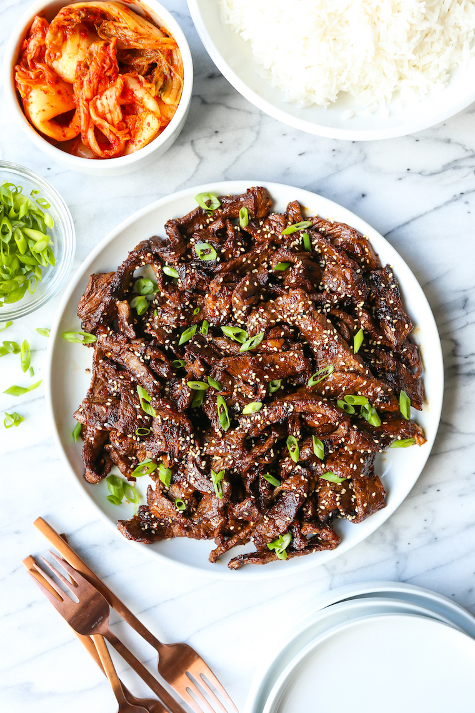

Home
Bulgogi

Bulgogi(불고기) or "Fire Meat" is a Korean grilled dish made of thin, marinated slices of meat, most commonly beef.
Undoubtedly it is one of the most well-known Korean traditional foods and it has been around for thousands of years. Naturally, the cooking method of bulgogi evolved over time and it varies by region too.
However, to narrow our focus down, we will be talking about the most common way of making beef bulgogi in modern times.
Ingredients
MAIN
- 800g Rib Eye
- 1 Onion
- 2 Green Onion
- 1/2 Carrot
- 1 Tbsp Toasted Sesame Oil
- 1 Tbsp Toasted Sesame Seeds
- 1 Tbsp Cooking Oil
BULGOGI MARINADE
- 6 Tbsp Soy Sauce
- 3 Tbsp Brown Sugar
- 2 Tbsp Rice Wine (mirin)
- 1 Asian Pear (or Red Apple)
- 1/2 Onion
- 1 Tbsp minced Garlic
- 1 tsp minced Ginger
- 1/8 tsp Ground Black Pepper
Instructions
- Blend the marinade ingredients in a mixer or food processor until smooth. Set aside.
- Place the thinly sliced meat in a mixing bowl and pour the marinade over it. Mix them well together while gently massaging the meat with your hands. (Wearing a food prep glove is very handy here!)
Add the sesame oil and mix it into the meat. (I prefer adding the sesame oil separately as opposed to mixing it in the marinade sauce. I read somewhere that the oil can prevent the other sauce getting absorbed effectively into the meat.)
Cover the bowl with cling wrap (or move the marinated meat into a glass container with a lid) and marinate the meat for at least 4 hours in the fridge. (If you have more time, you can also marinate it overnight to deepen the flavour even more).
- Preheat a skillet / bbq grill on medium high heat until well heated. Add the cooking oil and spread it well. Add the meat (and optional vegetables) and cook it on medium high to high heat for 3 to 5 mins (until the meat and vegetables cook to your desired doneness). Toss in the sesame seeds and stir them quickly.
- Serve the bulgogi with steamed rice and other Korean side dishes. (refer above for more tips)